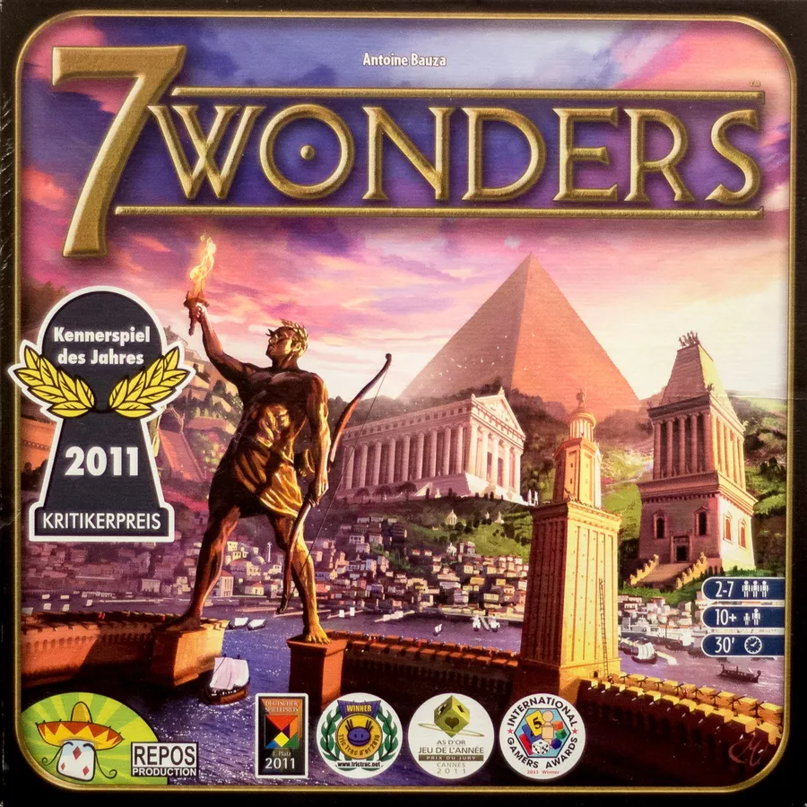

Board Game Review

7 Wonders
I'm eager to share my thoughts on a modern classic that has captured the hearts of countless players
worldwide: 7 Wonders. Designed by Antoine Bauza and published by Repos Production, this
civilization-building game invites players to construct architectural marvels and develop their cities
through the ages, all while competing with their neighbors for resources and prestige.
Components
7 Wonders comes in a sturdy box, containing 7 Wonder boards, 49 Age I cards, 49 Age II cards, 50 Age III
cards, 46 Conflict tokens, 24 value 3 coins, 46 value 1 coins, 1 score pad, 3 description of effect sheets,
and a rulebook. The components are of excellent quality, with thick, durable cards and Wonder boards that
showcase vivid and evocative artwork. The tokens and coins are made of sturdy cardboard, ensuring they can
withstand many plays.
Gameplay
7 Wonders is a card-drafting, civilization-building game for 3-7 players. Each player starts with a unique
Wonder board representing an ancient city, and the game is played over three Ages, with each Age consisting
of six rounds. During each round, players simultaneously choose a card from their hand, then pass the
remaining cards to their neighbor (in alternating directions for each Age).
The chosen cards represent various structures that players can build in their cities, such as military
buildings, scientific institutions, or resource-producing facilities. Each type of structure provides
different benefits, such as victory points, resources, or special abilities. Additionally, players can
choose to construct a stage of their Wonder, which grants powerful bonuses and additional victory points.
Players must carefully balance their own city's development while keeping an eye on their neighbors, as they
may need to trade resources or compete in military conflicts to advance their civilization.
Playing Time and Replayability
A game of 7 Wonders typically takes around 30-45 minutes, depending on the number of players and their
familiarity with the game. The game offers high replayability, as the unique combination of cards and Wonder
boards in each playthrough encourages players to adapt their strategies and try new approaches to building
their civilizations.
Conclusion
7 Wonders is a compelling and beautifully designed game that provides a satisfying blend of strategy,
choices, and competition. With its accessible mechanics and high replayability, it's a must-have for any
board game collection, appealing to both casual gamers and experienced strategists. Step into the shoes of
an ancient civilization's leader, and forge your path to victory by constructing magnificent Wonders and
developing a thriving city that will stand the test of time.
Did you enjoy my review of this game? Check out one of my favorite board game reviews below or see a
list of my reviews!
More importantly, I'm always looking for new games to enjoy. Let
me know what you're currently playing!
My Favorites
Read why these board games are my all-time favorites!